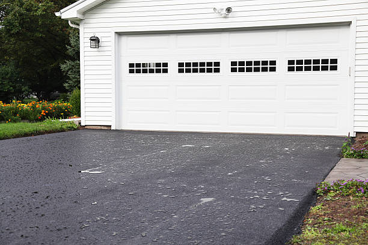
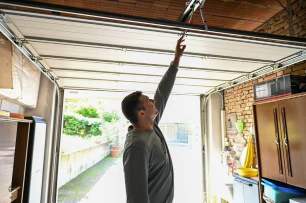
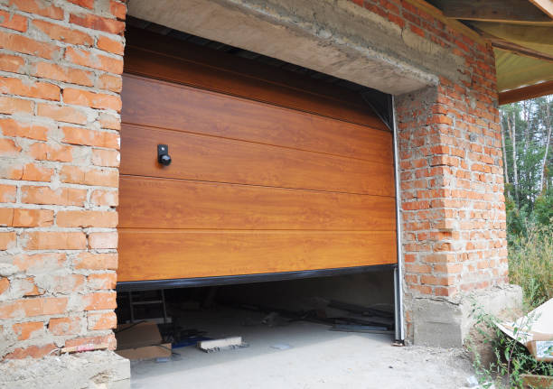

USA - Nationwide
info@chikegaragedoorrepair.xyz
USA - Nationwide
info@chikegaragedoorrepair.xyz

Ensure your automatic garage door functions flawlessly with our dedicated repair services. Trust our experts for reliable automatic garage door repair .
The convenience of an automatic garage door is undeniable, but when it malfunctions, it can be very frustrating. Our automatic garage door repair services in Usa - Nationwide are designed to address any issue associated with automatic systems, from faulty sensors and remote malfunctions to complete failures. Our trained technicians quickly assess the problem and provide effective solutions, ensuring that your automatic door is restored to its full functionality. Choose us for our reliability, expertise, and commitment to customer satisfaction.
$$ A **broken garage door** can lead to safety concerns and increased vulnerability for your property. Our **broken garage door repair services** in Usa - Nationwide are designed to address any issues you might face effectively and efficiently.
Our technicians arrive fully prepared to diagnose the problem, whether it’s a broken spring, malfunctioning motor, or other issues. We understand the urgency of having a broken door, which is why we prioritize fast and reliable repair services designed to restore your door's functionality as quickly as possible.
Choosing us means you are opting for a professional service focused on quality repairs and thorough customer support. We use high-quality parts to ensure your garage door remains reliable after repairs, giving you confidence in our work.
Residential & commercial Garage Door repair
Quality services at affordable prices
Immediate 24/ 7 emergency services


When your garage door malfunctions, it can feel like the end of the world. A broken garage door not only hampers your daily routine but also poses security risks. That's why finding reliable “garage door repair near me” services is essential. Our company understands the urgency and provides fast, efficient, and quality repairs to residents . Our experienced technicians arrive promptly at your location, equipped with the tools and parts necessary to get your garage door functioning again. We pride ourselves on our reputation as the best in the business, thanks to our commitment to quality service and customer satisfaction.

Emergencies can strike at any time. Whether it’s the middle of the night or during a busy weekend, a malfunctioning garage door can cause significant inconvenience. That’s why we offer 24/7 emergency garage door repair services to ensure you’re never left stranded. Our team of certified professionals is just a call away, ready to address any issue, big or small. We use high-quality materials and are trained to diagnose and fix any problem promptly. You can trust our commitment to fast response times, so you can have peace of mind knowing we’re there when you need us most.

Emergencies can happen anytime, which is why our **emergency garage door repair** service is available 24/7 . We recognize that a malfunctioning garage door is more than just an inconvenience; it can pose significant safety risks as well. Our dedicated team understands the urgency of getting your garage door back in working order without delay.
Our technicians are just a phone call away, fully equipped with the necessary tools and replacement parts to handle any emergency situation at a moment's notice. We believe in transparency and honesty in our pricing; you will only pay for the repairs needed and nothing more.
Relying on our extensive experience allows us to diagnose faults swiftly and implement repair strategies efficiently. With an array of past clients across diverse settings, we’ve seen it all. Our round-the-clock availability, coupled with our expertise and dedication to customer satisfaction, sets us apart as the premier choice for emergency garage door repairs .

Your garage door opener plays an essential role in the convenience and functionality of your garage door. If your opener is acting up, it can be frustrating and inconvenient. Our garage door opener repair services cover a wide range of issues, including malfunctioning remotes, worn gears, and complete system failures. With years of experience behind us, our team can diagnose and repair any brand and style of garage door opener. We additionally offer installation of newer, high-tech models that enhance your door's performance and security. Our reputation as the best garage door repair company is built on our commitment to service quality, professionalism, and customer satisfaction.

At our company, we believe that high-quality garage door services should not break the bank. Our affordable garage door repair in Usa - Nationwide ensures you get the best service without overspending. We offer transparent pricing with no hidden fees, enabling you to receive top-notch repairs at competitive rates. Our knowledgeable technicians assess your garage door’s needs efficiently, providing cost-effective solutions tailored to your specific situation. Whether you need a simple fix or a more complex repair, we are dedicated to finding the right solution for your budget. Don’t compromise on safety or quality – choose us for your garage door needs !

Quality garage door repair shouldn't break the bank. Our **affordable garage door repair** services are designed for customers seeking top-notch repairs without the hefty price tag. We offer a range of services catering to any budget, ensuring you don’t have to compromise on safety or quality.
Our transparent pricing model means you will always know what to expect before any work begins. We conduct thorough assessments of your garage door issues and provide detailed estimates, ensuring you receive an accurate cost of service. By maintaining low overhead costs and streamlining our services, we can pass savings on to you, offering a competitive advantage over other providers in the area.
Our commitment to efficiency ensures quick repairs without compromising quality. We use durable, reliable parts that enhance the longevity of your repairs—ideal for homeowners and businesses looking for solid solutions at budget-friendly prices. When you choose our affordable service, you’re choosing value and reliability.

Are you looking for **garage door installation** services Our team specializes in delivering high-quality garage door installations tailored to meet your requirements. A new garage door not only enhances curb appeal but also adds value and security to your property.
With countless styles, materials, and designs to choose from, we guide you through the selection process to find the ideal garage door for your home or business. Our knowledgeable team will take measurements, provide recommendations based on your needs, and ensure a smooth installation process from start to finish.
Choosing us means investing in a team that values professionalism, precision, and customer satisfaction. We ensure all aspects of the installation are handled meticulously, minimizing chances for future issues. Plus, we provide post-installation support to address any questions or concerns you may have. With our attention to detail and commitment to quality, you can trust us for all your garage door installation needs .

Your home deserves the best garage door service available, and our residential garage door repair is tailored specifically to meet your unique needs. We understand the importance of maintaining your home’s security and curb appeal, and our experienced team is equipped to handle a variety of problems that can arise with your garage door. From minor issues like a misalignment to more significant repairs involving springs and openers, no job is too big or small for us. We utilize high-quality parts and materials to ensure the longevity of our repairs, and we believe in building lasting relationships with our customers through exceptional service. Trust us to be your reliable partner in maintaining your garage door system.

Regular maintenance is key to extending the life of your garage door. Our **residential garage door maintenance services** offer proactive solutions to ensure your garage door operates smoothly. We understand that a well-maintained garage door can prevent unexpected breakdowns and save you money in the long run.
Our maintenance services include a thorough examination of all components, from springs and cables to rollers and tracks. We lubricate moving parts, tighten loose hardware, and check for any signs of wear and tear, addressing potential problems before they escalate.
By choosing our maintenance services, you are investing in the longevity and reliability of your garage door. We provide a convenient scheduling system, so you can have peace of mind knowing your garage door receives the care it deserves. Regular maintenance can help you avoid costly emergency repairs down the line, highlighting our commitment to quality and customer satisfaction in Usa - Nationwide.

The tracks of your garage door are integral for its smooth operation. If your garage door is off-track, it can be both inconvenient and dangerous. Our specialized garage door track repair services in Usa - Nationwide ensure that your garage door slides smoothly and effectively. Our experienced technicians will inspect, repair, or replace damaged tracks promptly to restore full functionality. We pride ourselves on our attention to detail and commitment to quality, providing you peace of mind knowing your garage door is in good hands.

When searching for the best garage door repair company look no further. Our company prides itself on delivering exceptional service and quality repairs tailored to your specific requirements. With years of experience, skilled technicians, and a vast knowledge of garage door systems, we are committed to exceeding customer expectations.
Why are we the best? We prioritize customer satisfaction through transparent communication, competitive pricing, and a commitment to quality. Our technicians are trained in the latest equipment and techniques, ensuring your repairs are handled promptly and correctly. Trust us to provide the best garage door repair services available in Usa - Nationwide.

If your garage door panels are warped, damaged, or simply outdated, our garage door panel replacement services can help restore the beauty and functionality of your door. You don’t have to replace the entire door; often, we can replace individual panels, saving you time and money. Our team has the expertise to match new panels seamlessly with your existing door for a cohesive look. We offer a variety of materials and finishes, ensuring you find a solution that matches your home's design. Our commitment to quality means that the panels we provide are built to withstand the elements and last for years. When it comes to maintaining the integrity of your garage door, count on us for professional panel replacement services.

Regular maintenance is the key to prolonging the life of your garage door and preventing unexpected repairs. Our comprehensive garage door maintenance services in Usa - Nationwide are designed to keep your door operating like new. We provide a full range of inspections, adjustments, lubrication, and testing of all components, including springs, cables, and openers, ensuring everything is in optimal condition. Our experienced technicians can identify potential issues before they escalate, saving you both time and money on repairs. With our maintenance packages, you can have peace of mind knowing that your garage door remains safe, efficient, and reliable. Choose our services to ensure your garage door functions perfectly for years down the line.

A malfunctioning garage door motor can lead to operational failures and safety risks. If you’re having issues with your garage door not responding or making strange noises, our garage door motor repair services can help. Our experienced technicians are trained to diagnose and repair various motor issues quickly and efficiently. We use high-quality replacements to ensure long-term reliability and performance. Trust us with your motor repairs so that your garage door operates as smoothly as possible.

When looking for garage door repair, it pays to choose local. Our local garage door repair services come with the assurance of quick response times and a personal touch. We are proud to serve our community, and our team understands the unique needs of local homeowners and businesses. With years of experience and a thorough understanding of garage door systems, we provide prompt, reliable services that you can count on. Choose us for our commitment to excellence and personalized customer service.

Experiencing issues with your garage door remote can be frustrating. Our **garage door remote repair services** in Usa - Nationwide address this problem head-on, restoring the convenience of remote-controlled access to your garage.
Our technicians are highly trained in diagnosing and repairing problems related to remote systems, including programming issues, battery replacements, or issues within the opener itself. We are here to ensure that you regain seamless access to your garage.
Transparency is key; we provide clear explanations of any issues and solutions available to you upfront, ensuring you’re comfortable with the work being undertaken. With a focus on quality and customer satisfaction, we aim to provide dependable repairs that guarantee efficient remote performance.

When your garage door is malfunctioning, knowing the cause can be tricky. Our **garage door troubleshooting services** offer expert diagnostics to identify issues swiftly and accurately. Our experienced technicians will methodically evaluate every aspect of your garage door system to get to the root of the problem.
Whether it’s unusual noises, failure to open or close, or any other malfunction, we have the skills and tools to troubleshoot effectively. Once we identify the issue, we will discuss the best possible solutions with you, ensuring you have the information you need to make an informed decision.
By selecting our service, you're choosing a thorough, detail-oriented approach that prioritizes customer education and satisfaction. Our goal is to ensure that your garage door system remains reliable and functioning optimally, preventing future headaches.

Garage door sensors play a critical role in the safety and functionality of your door. If your garage door isn’t closing or opening correctly, it may be due to a sensor issue. Our garage door sensor repair services include troubleshooting and repairing all types of sensor problems. Our skilled technicians will ensure that your sensors are accurately calibrated and functioning correctly, maximizing safety and performance. Trust us to get your garage door operating flawlessly while prioritizing your peace of mind.

A faulty garage door remote can be incredibly inconvenient, leaving you frustrated and unable to access your garage. Our garage door remote repair services address all types of remote issues, whether it’s a dead battery, faulty wiring, or programming problems.
Why choose us for remote repair? We offer quick diagnostics and effective solutions to get your remote working seamlessly again. Our technicians are knowledgeable and use quality materials during all repairs, ensuring long-lasting performance and customer satisfaction.

When it comes to a malfunctioning garage door, broken springs are often the culprit. Our **garage door spring replacement services** in Usa - Nationwide are designed to quickly and safely replace the springs on your door to restore its functionality.
Spring replacement can be dangerous if not handled by a professional; our experienced technicians are trained to safely and efficiently replace springs, ensuring your garage door operates smoothly. We use only high-quality springs suited to your garage door specifications, offering durability and improved performance.
We provide honest assessments, discussing your options and ensuring you understand the repair process. Choosing us for your spring replacement guarantees reliability and professionalism, so you can rest assured that your garage door is safe and effective once again.

A broken garage door is not just an inconvenience but also a security concern. Our broken garage door repair services in Usa - Nationwide are designed to restore functionality to your door swiftly. Regardless of whether the problem lies with broken springs, cables, or other components, our team is equipped to handle all types of repairs. We prioritize your safety, ensuring that all repairs are performed to the highest standards. Our commitment to quality service means that you can trust us to fix the issue right the first time. Don’t let a broken garage door disrupt your life – contact us for quick and reliable repairs.

Over time, garage door hinges can weaken or break down, affecting the door’s operation. If you notice difficulty in opening or closing, it may be time for hinge repair. Our garage door hinge repair services can replace or repair damaged hinges to restore optimal function. We use durable parts and our technicians possess the expertise to perform effective repairs quickly. Trust us to address the specifics of hinge failure and bring your garage door back to full functionality.

Roll-up garage doors require specialized attention when issues arise. Our roll-up garage door repair services in Usa - Nationwide ensure that these complex systems are handled with care and expertise. Whether it’s a malfunction in the coil mechanism or damage to the panels, our qualified technicians will diagnose the issue and provide precise repairs. We understand the importance of keeping your roll-up door functional, and our commitment to quality means you’ll receive the best possible service from our team.

Spring failures are among the most common issues homeowners face with garage doors. When it’s time for garage door spring replacement our dedicated team is here to help. We specialize in both torsion and extension spring replacements and ensure that the entire process is carried out safely and effectively. Using high-quality springs minimizes the risk of future issues and maximizes your door's lifespan. Our professionals are trained to handle spring replacements with care, understanding the tension and safety involved. Choose us to provide a seamless replacement process, so your garage door operates smoothly and reliably once again.
USA - Nationwide Garage Door repair Pros
(888) 964-1837
info@chikegaragedoorrepair.xyz
09.00 AM - 09.00 PM
09.00 AM - 12.00 PM


.jpg)